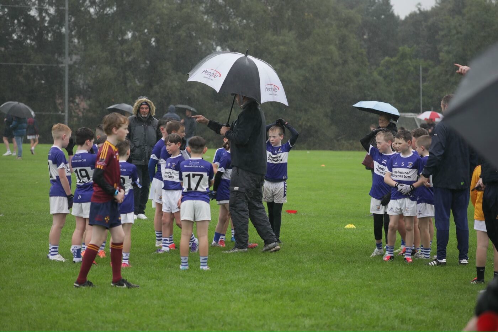
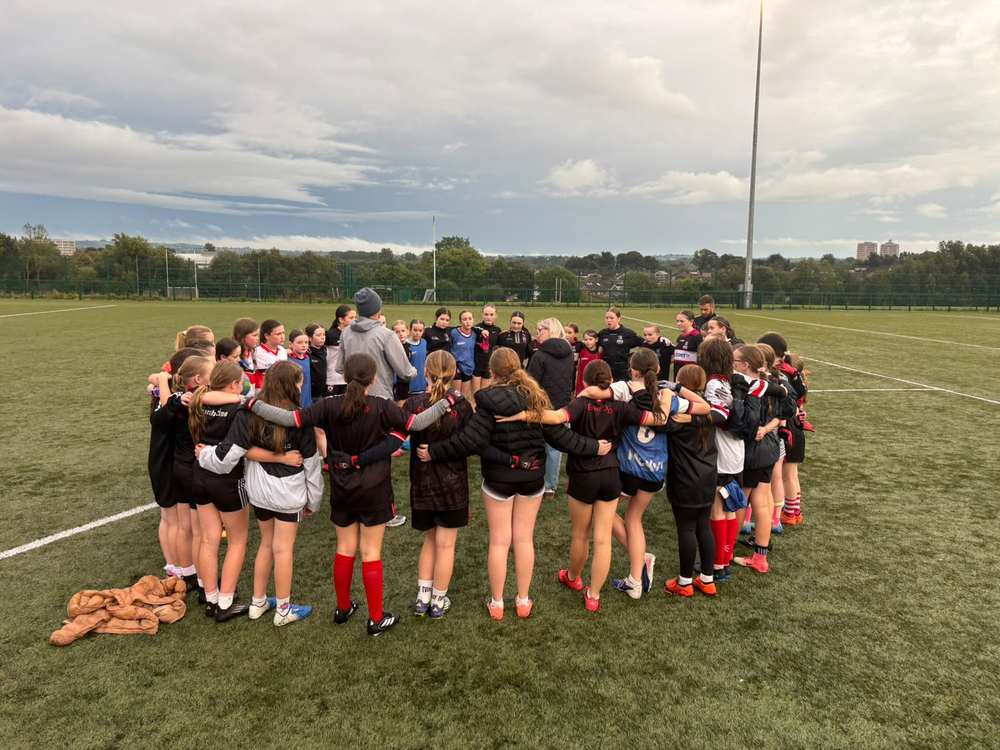
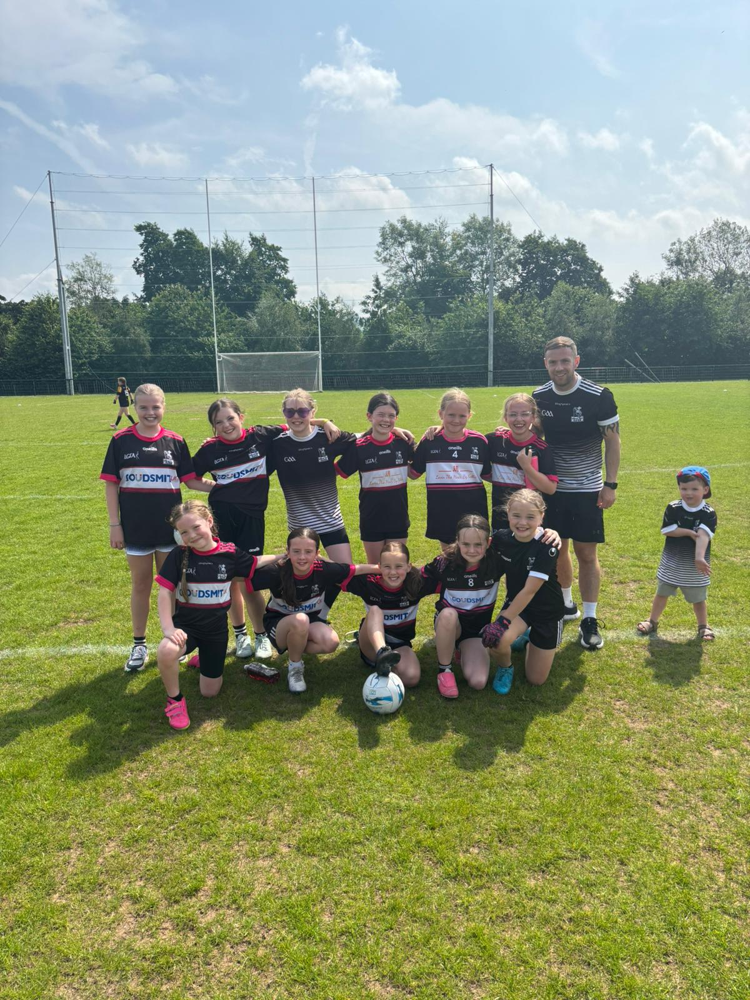
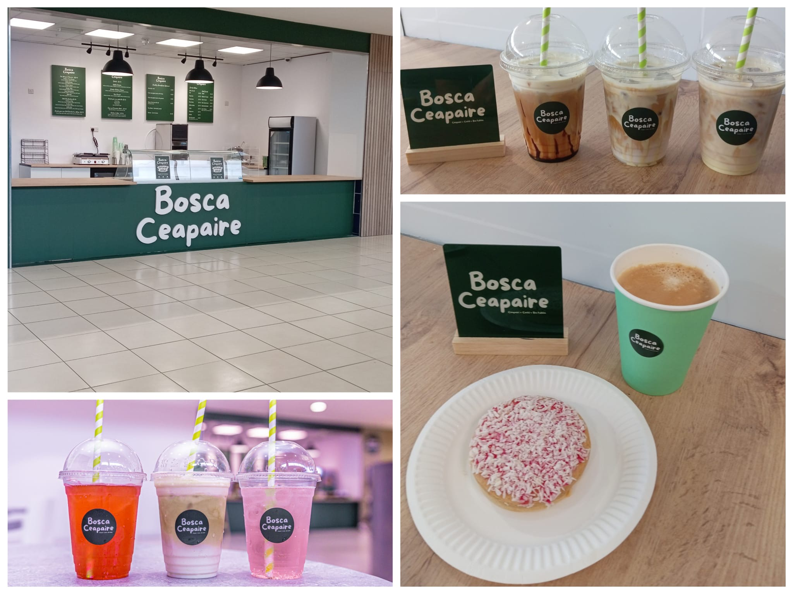
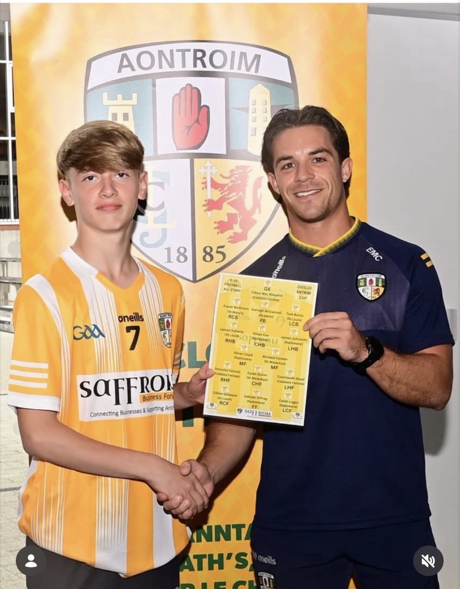
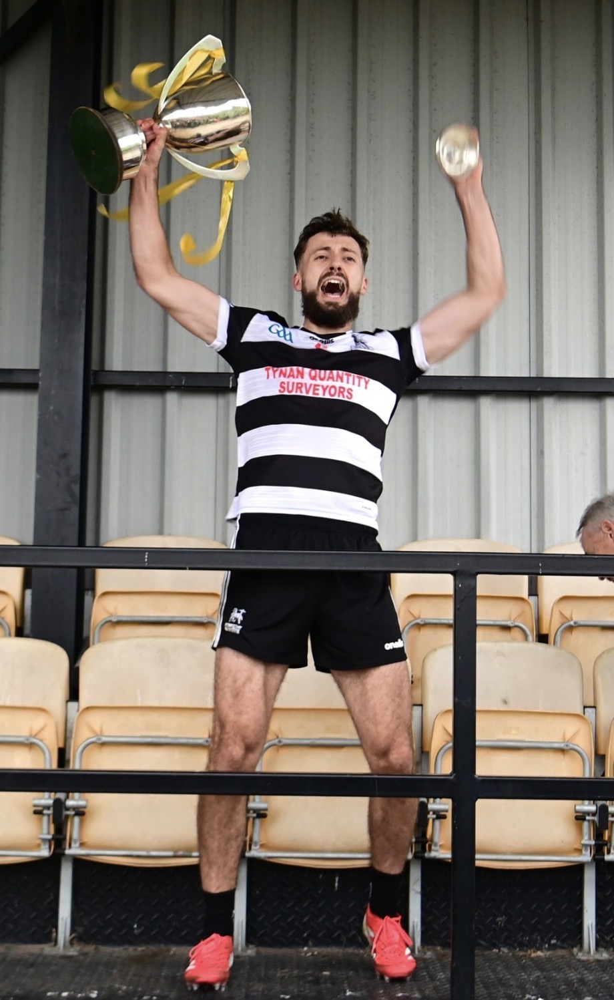

What a day for our U10 boys at Páirc Naomh Úna
Naomh Úna welcomed Naomh Eoin and Oliver Plunketts Eoghan Rua from Dublin for five fantastic matches and a memorable day.
View Story & PhotosNews
Announcements, match reports, juvenile updates, events and community stories.
Featured Stories

Naomh Úna welcomed Naomh Eoin and Oliver Plunketts Eoghan Rua from Dublin for five fantastic matches and a memorable day.
View Story & PhotosWeek Commencing 28 September
U14 football training, Friday juvenile training and an important 2027 squad-list deadline.
View Weekly Update
Our U10 and U12 girls trained with Antrim Ladies manager Mickey Devlin, showing great skill and creating a real buzz for the future.
Read the Full StoryChampionship · Final Group Game
Round 5 and our final group game. Get out in numbers and back the lads from the first whistle to the last.
Match Details
Gerard Haughey, coach of our U12 girls, is taking on a 50km run from Belfast to Newry to raise funds for four-year-old Violet, who has cerebral palsy. Everyone at St Agnes wishes Gerard the very best. Please support him and donate if you can.
Donate to Gerard’s Fundraiser
Congratulations to Cods and Martine on opening their new sandwich deli. Everyone at St Agnes wishes them every success!
.jpg)
St Agnes GAC celebrates Roy McLarnon's remarkable 40 years of commitment and service to Antrim GAA.

Congratulations to James Johnson on receiving an Antrim Schools All Star award.

St Agnes completed an historic league and championship double with a 1-14 to 0-9 victory over Pearse’s.
Match Reports
Older results and match reports are now kept together in the club archive.